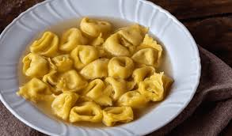

Tortellini in Brodo Recipe
Ingredients:
- 250g fresh tortellini (cheese or meat-filled)
- 1 liter chicken or beef broth
- 1 small onion, finely chopped
- 2 cloves garlic, minced
- 1 carrot, diced
- 1 celery stalk, diced
- Salt & black pepper to taste
- Fresh parsley, chopped
- 50g parmesan cheese, grated
Instructions:
- In a large pot, heat the broth over medium heat.
- Add onion, garlic, carrot, and celery, simmering until vegetables are tender.
- Season with salt and black pepper to taste.
- Add tortellini and cook according to package instructions until tender.
- Ladle into bowls, garnishing with fresh parsley and parmesan cheese.
- Serve hot and enjoy this comforting dish!